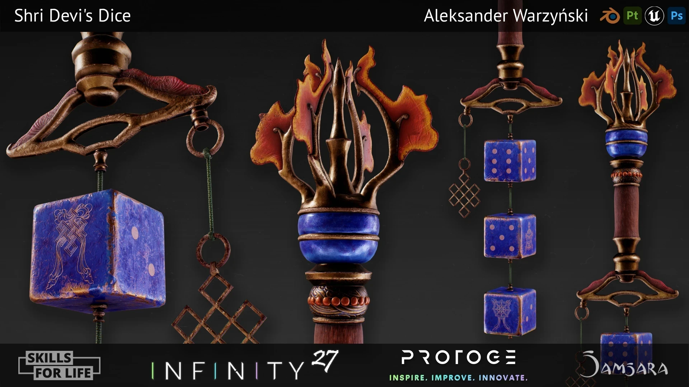
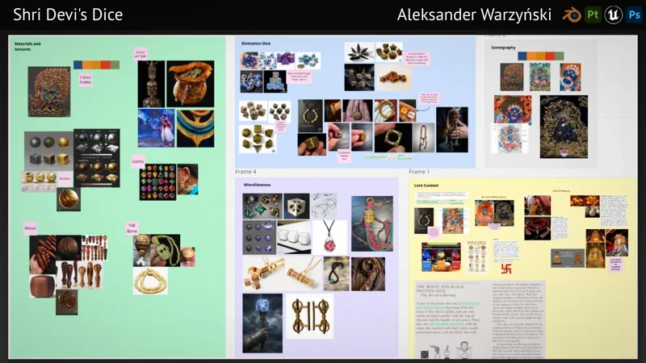
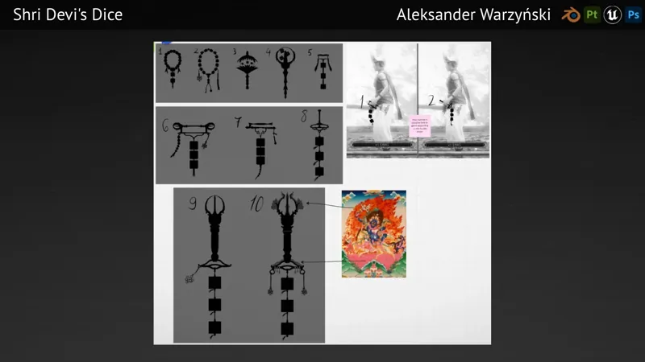
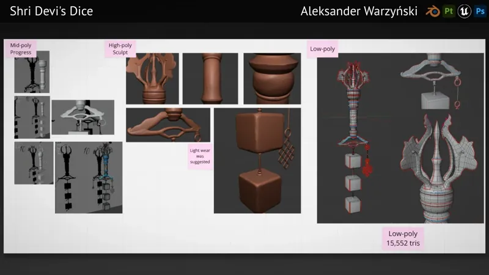
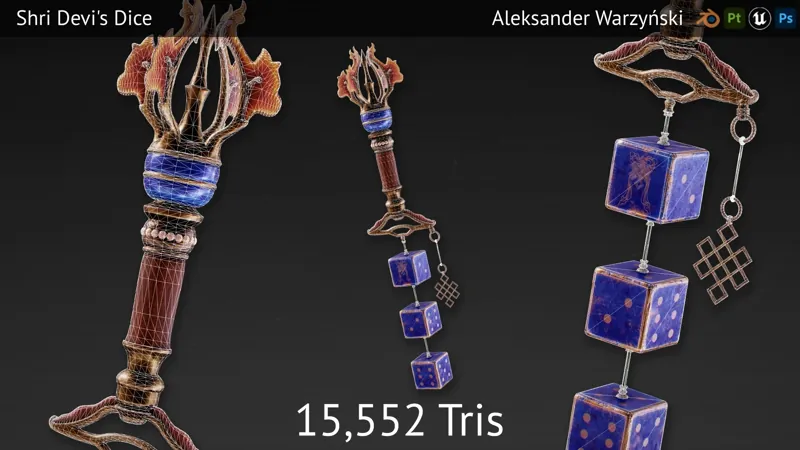
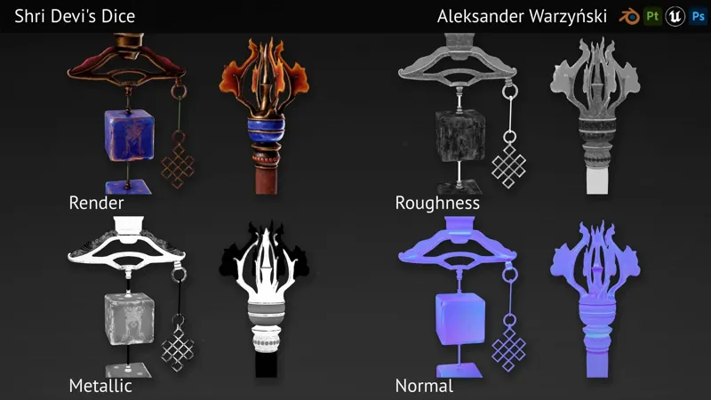
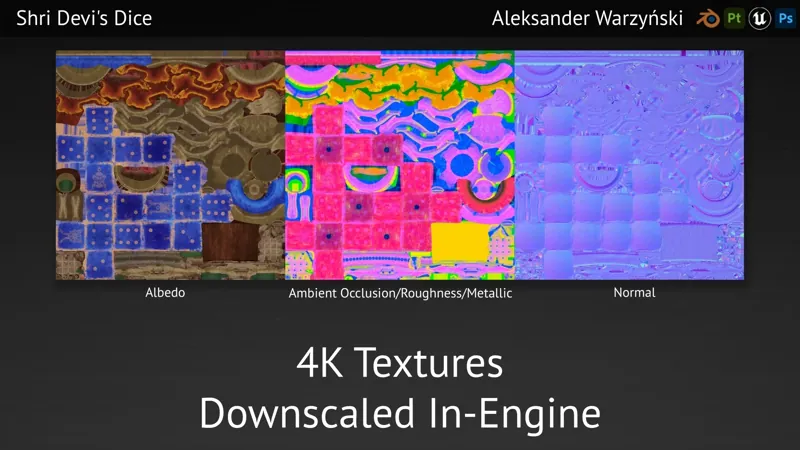
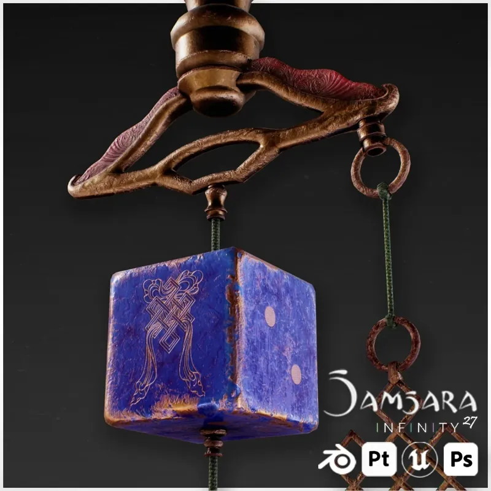

Shri Devi’s Dice
An offhand weapon for INFINITY27’s game Samsara, depicting the divination dice of the goddess Shri Devi (Palden Lhamo). I built it during a 4-week training bootcamp, then was offered a contract to polish it for the shipping build.

In Samsara
The finished asset in engine: the dice hang from the weapon on cords, with physics so they move with the character. Programmer Michael Humphriss handled the programming side of the item.
{kind=link}
{kind=link}
{kind=link}
Inspect the model
From lore to silhouette
I started with the source material: Tibetan divination dice, thangka paintings of Palden Lhamo and the lore behind her dice. The moodboards also covered materials (metallics, gems, wood and yak bone), a colour palette and the game’s art style.
I then explored ten silhouettes and mocked up how they would sit on the character in game. The final design, number 10, takes its flame crest and curved bar straight from the thangka reference.
{kind=link}

{kind=link}

Blockout to low-poly
I started from a mid-poly blockout, then sculpted high-poly detail for the crest, bar, handle and dice, and retopologised to a 15,552-triangle low-poly for baking. Feedback during the bootcamp asked for light wear, which I carried into the texturing.
{kind=link}

{kind=link}

Maps & materials
Textured in Substance 3D Painter across one UV set: worn bronze, lapis-blue dice with engraved symbols, a wooden handle and a fiery crest. Everything ships as three 4K maps (Albedo, a channel-packed AO / Roughness / Metallic map, and Normal), downscaled in engine as needed.
{kind=link}

{kind=link}

{kind=link}

What I learned
- Industry-standard workflowThe full pipeline for a game-ready asset, working to a studio’s brief and art style with regular feedback.
- Version control & production toolsPerforce with Unreal Engine for asset submission, and Hansoft for task tracking.
- Taking an asset to shipReturning to the asset under contract to polish texturing and in-game physics for the shipping build.
“Looks excellent in engine and model worked brilliantly with the weapons design.”